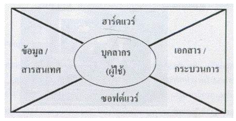
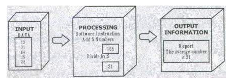

องค์ประกอบ

องค์ประกอบของระบบคอมพิวเตอร์
ระบบคอมพิวเตอร์ประกอบด้วยองค์ประกอบสำคัญ 5 ส่วนด้วยกัน คือ
1. ฮาร์ดแวร์ (Hardware) คือลักษณะทางกายของเครื่องคอมพิวเตอร์ ซึ่งหมายถึงตัวเครื่องคอมพิวเตอร์ และ อุปกรณ์รอบข้าง (peripheral) ที่เกี่ยวข้อง เช่น ฮาร์ดดิสก์ เครื่องพิมพ์ เป็นต้น ฮาร์ดแวร์ประกอบด้วย
1. หน่วยรับข้อมูล (input unit)
2. หน่วยประมวลผลกลาง (central processor unit) หรือ CPU
3. หน่วยความจำหลัก (Memory Unit)
4. หน่วยแสดงผลลัพธ์ (output unit)
5. หน่วยเก็บข้อมูลสำรอง (secondary storage unit)
หน่วยรับข้อมูลจะเป็นอุปกรณ์ที่ใช้สำหรับข้อมูลต่าง ๆ เข้าสู่คอมพิวเตอร์ จากนั้น หน่วยประมวลผลกลาง จะนำไปประมวลผล และแสดงผลลัพธ์ที่ได้ออกมากให้ผู้ใช้รับทราบทาง หน่วยแสดงผลลัพธ์
หน่วยความจำหลัก จะทำหน้าที่เสมือนเก็บข้อมูลชั่วคราวที่มีขนาดไม่สูงมากนัก การที่ฮาร์ดแวร์จะทำหน้าที่ได้มีประสิทธิภาพนั้น ขึ้นอยู่กับโปรแกรมคอมพิวเตอร์ที่ใช้ ส่วนการทำงานได้มากน้อยเพียงใด จะขึ้นอยู่กับหน่วยความจำหลักของเครื่องนั้น ๆ ข้อเสียของหน่วย ความจำหลักคือ หากปิดเครื่องคอมพิวเตอร์ที่อยู่ในหน่วยความจำหลักจะหายไป ในขณะที่ข้อมูลอยู่ที่ หน่วยเก็บข้อมูลสำรอง จะไม่สูญหายตราบเท่าที่ผู้ใช้ไม่ทำการลบข้อมูลนั้น รวมทั้งหน่วยเก็บ ข้อมูลสำรองยังมีความจุที่สูงมาก จึงเหมาะสำหรับการเก็บข้อมูลที่มีขนาดใหญ่ หรือเก็บข้อมูลไว้ใช้ในภายหลัง ข้อเสียของหน่วยเก็บข้อมูลสำรองคือการเรียกใช้ข้อมูลจะช้ากว่าหน่วยความจำหลักมาก
2. ซอฟต์แวร์ (Software) คอมพิวเตอร์ฮาร์ดแวร์ที่ประกอบออกมาจากโรงงานจะยังไม่สามารถทำงานใดๆ เนื่องจากต้องมี ซอฟต์แวร์ (Software) ซึ่งเป็นชุดคำสั่งหรือโปรแกรมที่สั่งให้ฮาร์ดแวร์ทำงานต่าง ๆ ตามต้องการ โดยชุดคำสั่งหรือโปรแกรมนั้นจะเขียนขึ้นมาจาก ภาษาคอมพิวเตอร์ (Programming Language) ภาษาใดภาษาหนึ่ง และมี โปรแกรมเมอร์ (Programmer) หรือนักเขียนโปรแกรมเป็น ผู้ใช้ภาษาคอมพิวเตอร์เหล่านั้นเขียนซอฟต์แวร์ต่าง ๆ ขึ้นมา ซอฟต์แวร์ สามารถแบ่งออกเป็นสองประเภทใหญ่ ๆ คือ
1. ซอฟต์แวร์ระบบ (System Software)
2. ซอฟต์แวร์ประยุกต์ (Application Software)
ซอฟต์แวร์ระบบ โดยส่วนมากแล้วจะติดตั้งมากับเครื่องคอมพิวเตอร์เนื่องจากซอฟต์แวร์ระบบเป็นส่วนควบคุมทำงานต่าง ๆ ของคอมพิวเตอร์ เพื่อให้สามารถเริ่มต้นการทำงานอื่น ๆ ที่ผู้ใช้ต้องการได้ต่อไป ส่วนซอฟต์แวร์ประยุกต์ จะเป็นซอฟต์แวร์ที่เน้นในการช่วยการทำงานต่าง ๆ ให้กับผู้ใช้ ซึ่งแตกต่างกันไปตามความต้องการของผู้ใช้แต่ละคน
ซอฟต์แวร์ในระบบไมโครคอมพิวเตอร์
3. บุคลากร (People ware)
เครื่องคอมพิวเตอร์โดยมากต้องใช้บุคลากรสั่งให้เครื่องทำงาน เรียกบุคลากรเหล่านี้ว่า ผู้ใช้ หรือ ยูเซอร์ (user) แต่ก็มีบางชนิดที่สามารถทำงานได้เองโดยไม่ต้องใช้ผู้ควบคุม อย่างไรก็ตาม คอมพิวเตอร์ก็ยังคงต้องถูกออกแบบหรือดูแลรักษาโดยมนุษย์เสมอ
ผู้ใช้คอมพิวเตอร์ (computer user) แบ่งได้เป็นหลายระดับ เพราะผู้ใช้คอมพิวเตอร์ บางส่วนก็ทำงานพื้นฐานของคอมพิวเตอร์เท่านั้น แต่บางส่วนก็พยายามศึกษาโปรแกรมประยุกต์ในขั้นที่สูงขึ้น ทำให้มีความชำนาญในการใช้โปรแกรมประยุกต์ต่าง ๆ นิยมเรียกกลุ่มนี้ว่า เพาเวอร์ยูสเซอร์ (power user)
ผู้เชี่ยวชาญทางด้านคอมพิวเตอร์ (computer professional) หมายถึงผู้ที่ได้ศึกษาวิชาการทางด้านคอมพิวเตอร์ ทั้งในระดับกลางและระดับสูง ผู้เชี่ยวชาญทางด้านนี้จะนำความรู้ที่ได้ศึกษามาประยุกต์และพัฒนาใช้งาน และประสิทธิภาพของระบบคอมพิวเตอร์ให้ทำงานในขั้นสูงขึ้นไปได้อีก นักเขียนโปรแกรม (programmer) ก็ถือว่าเป็นผู้เชียวชาญทางคอมพิวเตอร์เช่นกัน เพราะสามารถสร้างโปรแกรมใหม่ ๆ ได้ และเป็นเส้นทางหนึ่งที่จะนำไปสู่การเป็นผู้เชี่ยวชาญทางคอมพิวเตอร์ต่อไป
บุคลากรก็เป็นส่วนหนึ่งของระบบคอมพิวเตอร์ เพราะมีความเกี่ยวข้องกับระบบคอมพิวเตอร์ ตั้งแต่การพัฒนาเครื่องคอมพิวเตอร์ ตลอดจนถึงการนำคอมพิวเตอร์มาใช้งานต่าง ๆ ซึ่งสามารถสรุปลักษณะงานได้ดังนี้
- การดำเนินงานและเครื่องอุปกรณ์ต่าง ๆ เช่น การบันทึกข้อมูลลงสื่อ หรือส่งข้อมูลเข้าประมวล หรือควบคุมการทำงานของระบบคอมพิวเตอร์ เช่น เจ้าหน้าที่บันทึกข้อมูล (Data Entry Operator) เป็นต้น
- การพัฒนาและบำรุงรักษาโปรแกรม เช่น เจ้าหน้าที่พัฒนาโปรแกรมประยุกต์ (Application Programmer) เจ้าหน้าที่พัฒนาโปรแกรม (System Programmer) เป็นต้น
- การวิเคราะห์และออกแบบระบบงานที่ใช้คอมพิวเตอร์ประมวลผล เช่น เจ้าหน้าที่วิเคราะห์และออกแบบระบบงาน (System Analyst and Administrator) วิศวกรระบบ (System Engineer) เจ้าหน้าที่จัดการฐานข้อมูล (Database Administrator) เป็นต้น
- การพัฒนาและบำรุงรักษาระบบทางฮาร์ดแวร์ เช่น เจ้าหน้าที่ควบคุมการทำงานระบบคอมพิวเตอร์ (Computer Operator) เป็นต้น
- การบริหารในหน่วยประมวลผลข้อมูล เช่น ผู้บริหารศูนย์ประมวลผลข้อมูลด้วยคอมพิวเตอร์ (EDP Manager) เป็นต้น
4. ข้อมูลและสารสนเทศ (Data / Information)
ในการทำงานต่าง ๆ จะต้องมีข้อมูลเกิดขึ้นตลอดเวลา ข้อมูลที่เกี่ยวข้องกับงานที่ถูกเก็บรวบรวมมาประมวลผล เพื่อให้ได้สารสนเทศที่เป็นประโยชน์ต่อผู้ใช้ ซึ่งในปัจจุบันมีการนำเอาระบบคอมพิวเตอร์มาเป็นข้อมูลในการดัดแปลงข้อมูลให้ได้ประสิทธิภาพโดยแตกต่างๆระหว่าง ข้อมูล และ สารสนเทศ คือ
ข้อมูล คือ ได้จากการสำรวจจริง แต่ สารสนเทศ คือ ได้จากข้อมูลไม่ผ่านกระบวนการหนึ่งก่อน
สารสนเทศเป็นสิ่งที่ผู้บริหารนำไปใช้ช่วยในการตัดสินใจ โดยที่สารสนเทศที่มีประโยชน์นั้นจะมีคุณสมบัติ ดังตาราง

การเปลี่ยนรูปจากข้อมูลสู่สารสนเทศ
5. กระบวนการทำงาน (Procedure)
กระบวนการทำงานหรือโพรซีเยอร์ หมายถึง ขั้นตอนที่ผู้ใช้จะต้องทำตาม เพื่อให้ได้งานเฉพาะอย่างจากคอมพิวเตอร์ซึ่งผู้ใช้คอมพิวเตอร์ทุกคนต้องรู้การทำงานพื้นฐานของเครื่องคอมพิวเตอร์ เพื่อที่จะสามารถใช้งานได้อย่างถูกต้อง ตัวอย่างเช่น การใช้เครื่อง ฝาก-ถอนเงินอัตโนมัติ ถ้าต้องการถอนเงินจะต้องผ่านกระบวนการต่าง ๆ ดังนี้
1. จอภาพแสดงข้อความเตรียมพร้อมที่จะทำงาน
2. สอดบัตร และพิมพ์รหัสผู้ใช้
3. เลือกรายการ
4. ใส่จำนวนเงินที่ต้องการ
5. รับเงิน
6. รับใบบันทึกรายการ และบัตร
การใช้คอมพิวเตอร์ปฏิบัติงานในส่วนต่าง ๆ นั้นมักจะมีขั้นตอนที่สลับซับซ้อน และเกี่ยวข้องกับช่วงเวลาต่าง ๆ ในการปฏิบัติงานด้วย จึงต้องมีคู่มือการปฏิบัติงานที่ชัดเจน เช่น คู่มือสำหรับผู้ควบคุมเครื่อง (Operation Manual) คู่มือสำหรับผู้ใช้ (User Manual) เป็นต้น
อ้างอิง
https://docs.google.com/document/d/18j4UbG4065jXExAUksw21GHLA9lLS3JXemJ7wVjjHxs/preview?hgd=1
|